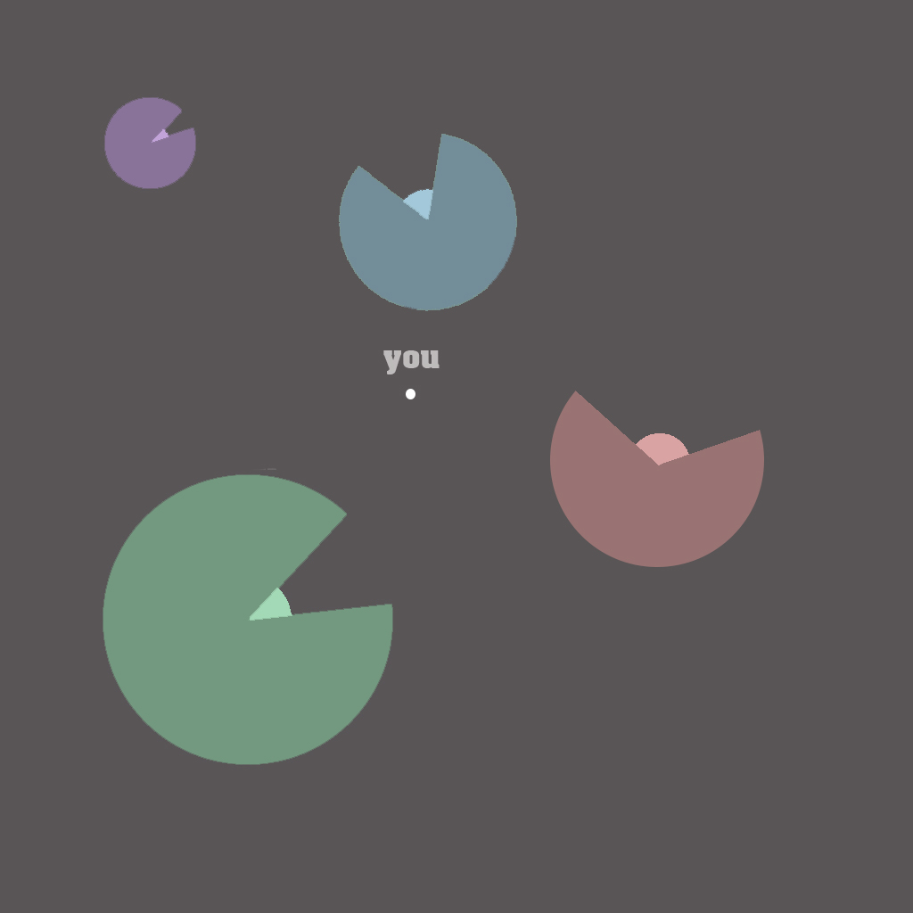

Play as a worker from a janitorial company that handles all dead star clean up in the galaxy. Its your job to ensure that any dying star is taken care of before it destroys you and any surrounding planets. Get ready to bob and weave through dying stars on the verge of destruction as you desperately try to clean them up before they explode.
